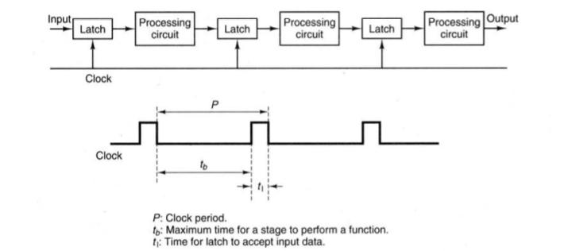

PIPELINE DEFINITION
Pipelining is the process of accumulating instruction from the processor through a pipeline. It allows storing and executing instructions in an orderly process. It is also known as pipeline processing.
Pipelining is a technique where multiple instructions are overlapped during execution. Pipeline is divided into stages and these stages are connected with one another to form a pipe like structure. Instructions enter from one end and exit from another end.
Pipelining increases the overall instruction throughput.
In pipeline system, each segment consists of an input register followed by a combinational circuit. The register is used to hold data and combinational circuit performs operations on it. The output of combinational circuit is applied to the input register of the next segment.
reference website
PIPELINE STRUCTURE
The pipeline design technique decomposes a sequential process into several subprocesses, called stages or
segments. A stage performs a particular function and produces an intermediate result. It consists of an
input latch, also called a register or buffer, followed by a processing circuit. (A processing circuit can be a
combinational or sequential circuit. The processing circuit of a given stage is connected to the input latch
of the next stage . A clock signal is connected to each input latch. At each clock pulse,
every stage transfers its intermediate result to the input latch of the next stage. In this way, the final result
is produced after the input data have passed through the entire pipeline, completing one stage per clock
pulse. The period of the clock pulse should be large enough to provide sufficient time for a signal to
traverse through the slowest stage, which is called the bottleneck (i.e., the stage needing the longest amount
of time to complete). In addition, there should be enough time for a latch to store its input signals. If the
clock's period, P, is expressed as P = tb + tl, then tb should be greater than the maximum delay of the
bottleneck stage, and tl should be sufficient for storing data into a latch.

>back...